Every row in the grid carries a list of color tags: small status markers drawn as colored strips on the row header. Tags record how safe a row is to translate, whether it contains Japanese at all, and what the automatic tools did with it. Tags drive batch translation, the apply/export filters, and word wrapping — rows are processed or skipped based on their tags.
A row can carry more than one tag (the strips stack), and you can change tags at any time. Rows with no tag at all are the plain, safe case.
| Tag | Name | Meaning and default behavior |
|---|---|---|
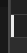 |
White / no tag | Normal dialogue text — safe to translate. This is the default for regular message rows; the batch translator processes them. |
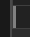 |
Gray | Same kind of content as an untagged row, but the text contains no Japanese. Skipped by the batch translator by default. |
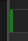 |
Green | Partially safe: Japanese text found in a location that mixes text with code or plugin data (script fragments are escaped before translating). Check the surrounding scripts and plugins manually. Translated by default. |
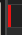 |
Red | Not safe to translate, or content the parser could not identify — script strings, variable values, plugin command arguments. Skipped by default. |
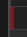 |
Dark red | Red-type content that contains no Japanese text. Skipped by default. |
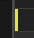 |
Yellow | Potentially translatable but requires manual verification before translating. Skipped by default. |
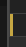 |
Gold | Yellow-type content that contains no Japanese text. Skipped by default. |
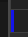 |
Blue | Comment or escaped text — developer notes and similar. Usually harmless, but translating them is unnecessary. Skipped by default. |
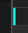 |
Aqua | Blue-type content that contains no Japanese text. Skipped by default. |
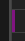 |
Purple | The batch translator suspects it produced a broken result for this row (for example output that looks truncated or looped compared to the original). Re-translate the row manually or with a different translator. |
| Medium purple | The DSLR semantic review (QC/Judge) flagged this row as a suspected translation problem — the model found a defect the deterministic checks cannot see (mistranslation, dropped meaning, softening, …). See Review Translations. Cleared only by the review itself: a re-translation that the reviewer judges clean. | |
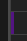 |
Indigo | Word wrapping problem: the automatic wrapper could not wrap this row normally, so line breaks may need manual adjustment. |
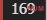 |
Number | A numeric value (font sizes and similar settings). The row header shows NUM, and an internal marker added to numeric entries is hidden in the grid. Useful for changing values such as font size during translation. |
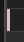 |
Pink | Internal processing marker used by the batch translator while it works on a row — it only ever appears alongside another tag and is normally removed again automatically. A pink tag that survives a completed batch run deserves a look. |
black, silver, tan, font) that no built-in tool assigns or acts upon. Use them for your own marking.red, comments get blue, numeric values get num, and so on.mediumpurple tag on rows it judges (see Review Translations); it never touches any other tag.gray, gold, aqua or darkred depending on its base color) and adds result tags such as purple and indigo afterwards. Tag changes preserve the row's other tags — a flagged row keeps its base color tag alongside the result tag.Tags submenu: Red, Yellow, Green, Blue and Gold are one click away, More tags... opens the full dialog.Tagging dialog directly. Pick any combination of tags and an action: Append tags (add to existing ones), Remove tags, or Set tags (replace the row's tags with exactly the selection).With selection... to tag everything found at once — see Find & Replace.What to do with tagged rows? section in the export options can blacklist or whitelist tags, so tagged rows can be excluded from the translated game entirely.The Find window can search for tags instead of text: set Target to Tag and type one or more tag names (separate several tag names with spaces; a row matching any of them is returned). The results list shows each row's tags next to it, so you can review or re-tag them in bulk.
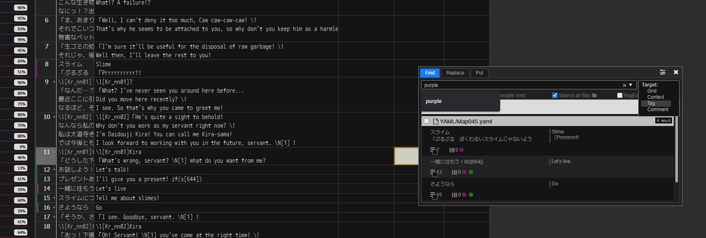
Searching with Target: Tag finds all rows carrying the given tags.